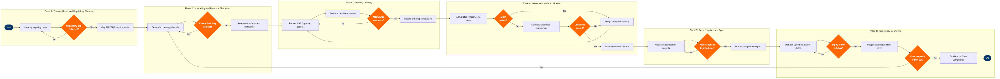

| Step | L4 Step Name | KPI / Target | Pain Point / Risk | Gate |
|---|---|---|---|---|
| 1.1 | Identify expiring crew certifications | 100% of expiring certs identified ≥60 days before expiry | Jeppesen qualification module requires manual reconciliation with FAA IACRA records; mismatches cause last-minute groundings when discrepancies surface during pre-flight checks | |
| 1.2 | Map requirements against FAR/AQP framework | Requirement matrix accuracy ≥99% vs. FAA-approved AQP schedule | Airlines with FAA-approved AQP have different recurrency intervals than standard FAR Part 135/121 defaults; Jeppesen must be manually configured per AQP module or will generate false compliance gaps | ⚠ |
| 1.3 | Validate requirements against fleet qualification matrix | Zero invalid simulator variant assignments at time of booking | Fleet commonality assumptions (e.g. 737-700 vs. 737 MAX 8 differences) can result in incorrect simulator type bookings; reconfigured MAX simulators require separate certification after Boeing grounding | |
| 2.1 | Generate training schedule and crew assignments | Training schedule published ≥45 days before earliest session date | CAE SimFinity scheduling does not natively integrate with Jeppesen rostering; double-bookings arise when crew are simultaneously assigned to flying duties and simulator sessions during the same duty period | |
| 2.2 | Check crew scheduling conflicts and FAR legality | Zero training assignments that violate FAR Part 117 rest or duty limits | Simulator sessions count as duty time under FAR Part 117 but are often omitted from crew duty calculators; non-compliance discovered late in scheduling cycle forces expensive last-minute crew swaps | ⚠ |
| 2.3 | Reserve simulator slots and instructor resources | Simulator utilisation rate ≥85%; booking cancellation rate ≤5% | Industry-wide simulator capacity constraints (limited Level D 737 MAX simulators globally) cause lead times of 6–12 weeks; last-minute certificate expirations cannot be accommodated without costly wet-lease of third-party simulator time | |
| 2.4 | Notify crew of training assignments and prerequisites | Crew acknowledgement of training assignment ≥95% within 5 business days | Crew portal notification fatigue leads to missed acknowledgements; no escalation workflow in SAP SuccessFactors Learning to flag non-response to crew base managers automatically | |
| 3.1 | Deliver CBT and ground school modules | CBT completion rate ≥98% before simulator session; average CBT pass rate ≥90% on first attempt | CBT content refresh lags behind Boeing and Airbus service bulletin cycles; crews may train on outdated emergency procedure content if LMS version control is not tightly managed with OEM curriculum releases | |
| 3.2 | Execute simulator training session (PC/OE/LOFT) | Session completion rate ≥97%; average maneuver proficiency score ≥3.0/4.0 on CAST/AQP rubric | CAE SimFinity session logs are stored locally at training centre; real-time sync to Jeppesen qualification records requires manual file export and upload, creating a 24–48h data latency window during which crew show as non-current in scheduling systems | |
| 3.3 | Verify attendance and training hours compliance | Attendance verification completed within 24h of session end; zero incomplete records forwarded to assessment phase | Partial session completions (e.g. simulator hardware fault mid-session) require FAA Operations Specification deviation approval before credit can be granted; no automated workflow in SAP SuccessFactors to flag partial completions for regulatory review | ⚠ |
| 4.1 | Administer written and oral knowledge exam | Exam pass rate ≥92% on first attempt; remedial re-exam scheduled within 7 days of failure | FAA-approved question banks must be updated within 30 days of regulatory change (e.g. new NOTAM format, amended AOM chapter); SAP SuccessFactors Learning has no automated content update trigger linked to ATPCO or FAA rulemaking RSS feeds | ⚠ |
| 4.2 | Evaluate simulator checkride performance | Checkride pass rate ≥95% on first attempt; debrief delivered within 1h of session end | Under AQP, unsatisfactory grades must be correlated across crew cohorts to identify systemic training gaps vs. individual performance issues; CAE SimFinity does not natively produce cohort-level analytics — requires separate export to AWS Redshift for trend analysis | ⚠ |
| 4.3 | Process pass/fail outcome and assign remedial path | Remedial plan issued within 24h of failure; restricted flying status applied in Jeppesen within 2h of fail determination | Jeppesen does not automatically restrict crew from scheduled flights upon a failed checkride — manual status update required; delay in status change creates legal exposure if a non-current crew member departs before the block is applied | ⚠ |
| 5.1 | Issue or renew certificate and update qualification record | Certificate updated in FAA IACRA within 5 business days of checkride pass; zero expired certificates active in Jeppesen qualification module | IACRA processing delays (common during peak season or after mass recurrent training cycles) can leave pilots in a limbo state — passed checkride but no updated certificate — requiring Temporary Authorisation letters that must be manually tracked outside automated systems | |
| 5.2 | Sync updated qualifications to crew scheduling system | Qualification sync completed within 4h of IACRA update; scheduling legality check auto-passed in Jeppesen within same window | Jeppesen qualification record sync relies on manual CSV import from FAA IACRA; no API integration exists, creating a reconciliation bottleneck during high-volume recurrent training months (typically January and July for most carriers) | ⚠ |
| 6.1 | Monitor upcoming recurrency expiry dates | 100% of expiring qualifications flagged ≥60 days before expiry; dashboard refresh latency ≤1h | AQP recurrency windows are qualification-event-based (not calendar-based), making rolling expiry calculation complex; Jeppesen's standard recurrency alert module applies calendar logic and generates false alarms for AQP-credentialed crew, reducing alert credibility | |
| 6.2 | Trigger automated recurrency alert to crew and base manager | Alert delivery confirmation rate ≥99%; training re-scheduling initiated within 3 business days of 60-day alert | Alert fatigue from Jeppesen's notification volume causes base managers to filter or ignore automated messages; no read-receipt or escalation logic exists in standard Jeppesen notification module — critical alerts are indistinguishable from routine operational messages | ⚠ |
| 6.3 | Escalate non-compliant crew to Crew Compliance team | Zero crew operating with lapsed certifications; escalation-to-grounding action completed within 2h of SLA breach | FAA Certificate Management Office requires airlines to self-report systemic training programme non-compliance within 10 days; failure to ground and report non-compliant crew can trigger enforcement action under 14 CFR Part 13, including civil penalties up to $25,000 per violation per day | ⚠ |